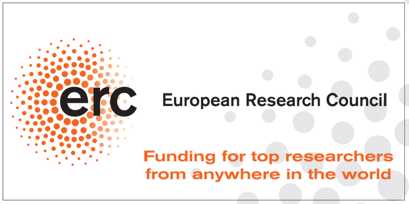

Structured low-rank approximation:
|
|  |
State-of-the-art methods for data processing are model based. We develop a fundamentally new approach that does not depend on an explicit model representation and can be used for model-free data processing. From a theoretical point of view, the prime advantage of the newly proposed paradigm is conceptual unification of existing methods. From a practical point of view, the proposed paradigm opens new possibilities for development of computational methods for data processing.
The underlying computational tool in the proposed setting is low-rank approximation. Recent work by the applicant, co-workers, and others has demonstrated advantages of computational methods based on low-rank approximation over classical methods, based on solution of linear systems of equations. In this project, we will further advance the theory and algorithms for low-rank approximation by developing robust and efficient local optimization methods and methods based on convex relaxations.
Low-rank approximation has applications in systems and control, signal processing, computer algebra, and machine learning, to name a few. Generic examples in system theory and signal processing are model reduction and system identification. Dimensionality reduction, classification, and information retrieval problems in machine learning can be formulated and solved as low-rank approximation problems, thus benefiting from the theory, algorithms, and numerical software tools developed in this research project. Beyond the scope of the project, we envisage that the newly proposed paradigm will catalyze cross-disciplinary research, leading to selection of the best theoretical tools and computational methods available as well as development of new ones by a synergy of ideas from different application domains.